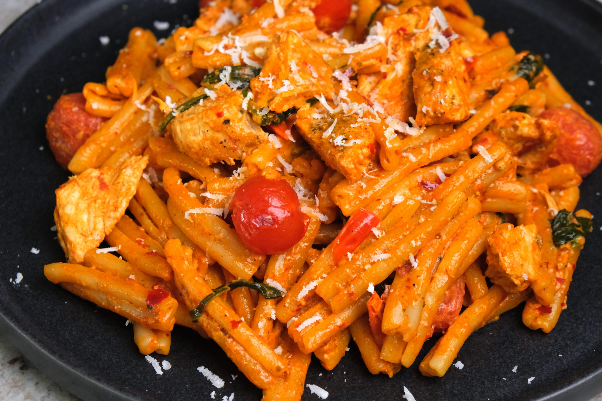

Home
Creamy Harissa Pasta

This is a dinner that kind of crosses the boundaries between lazy and not. The actual thing can be done in about 30 minutes or less if you feel like it.
I don't think it can be called 'healthy' by any stretch of the imagination but it's got plenty of colour, flavour and life in it.
The most impact here is from the quality of the pasta. I've written this as if you're using normal dry pasta like you'd find at a shop, but fresh pasta is better and homemade is best. Check out our recipe for homemade pasta here.
Anyway, don't stress this one too much. The cream does 90% of the heavy lifting.
Ingredients
- Harissa Paste. I would say get good quality but literally Belazu is all I can ever find. I like Rose Harissa fpr this but it's all good.
- Cream. Single or Double - I usually do double but single works fine too.
- Pasta. This is a thick sauce so it works well with rigatoni or conchigle but anything thicker than spaghetti is fine. I think even anything in the strip family like tagliatelle would work.
- Tomatoes. I prefer baby plum for this. You want them to ideally be small, decently flavourful, and fresh. Cherry or San Marzino or the small heritage tomatoes work.
- Spinach. Fresh baby spinach would be my suggestion here.
- Protein of choice. I'm writing this for chicken breast - use your head if you want to use something else.
- An onion. This is actually optional, but it's nice.
- Fresh glove of garlic. Again, optional, but nice.
- Parmesan or other hard cheese - for grating over the top. You want a microplane or other small hole grater for this.